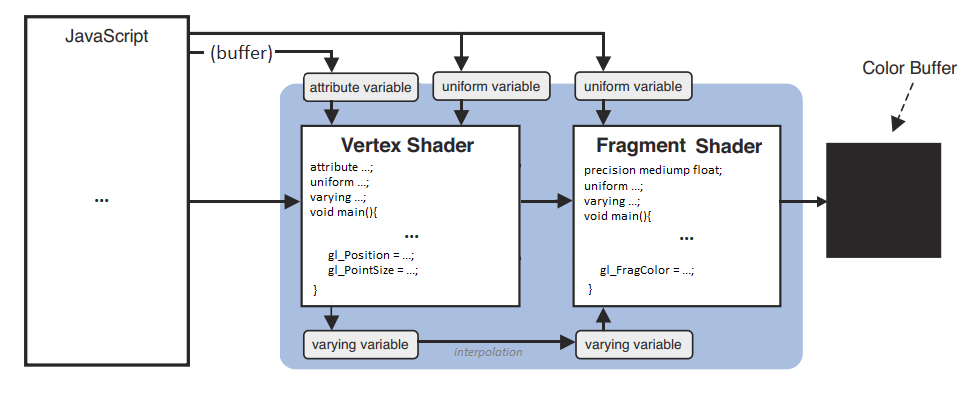

WebGL guide
october 2019 - may 2020
Introduction
This guide is a complete, summarized WebGL tutorial, with tiny interactive demos in each chapter.
It's mainly inspired by the book WebGL Programming Guide and the websites Webgl2Fundamentals, LearnWebgl &, MDN.
Starting nearly from scratch, you'll be able to create your own 3D interactive scenes without needing to use any library or framework: only vanilla JS & WebGL.
My goal was to gather all the information and tricks about WebGL I found scattered everywhere, and present them in a short and helpful way. I hope you'll enjoy it!
The live playground (used for the demos) is available here, my 3D OBJ file parser/viewer is here, and all the source code is available on Github.
Helper files created while making this guide: webgl.js, matrix.js and shapes.js.
If you're interested in code golfing, Shadertoy, WebGL raymarching and signed distance functions, check out Webgl quest and Webgl quest 2.
Special thanks to Inigo Quilez, Kevin Chapelier, Freya Holmér and Adrien Guéret for their knowledge, tips and proofreading!
What is WebGL?
Presentation
WebGL is a JavaScript API designed to compute and draw 2D and 3D graphics very fast in a Web browser, by using the processing power of the GPU.
It's based on OpenGL ES and is programmed using shaders coded in GLSL, a language similar to C and C++.
A scene rendered by WebGL is made of vertices (points in 3D space, with coordinates X, Y, Z), which can be drawn as points, lines or triangles (colored, shaded or textured).
Two versions of the API exist: WebGL 1.0, supported by 97% of browsers, and its evolution WebGL 2.0, supported by 74% of browsers as of may 2020 (source).
This guide will focus on WebGL 1.0, but all the features added in WebGL 2.0 will be explained at the end if you want to take the plunge.
The workflow of a WebGL program is pretty complex, and can be summarized like this:
- The JavaScript code initializes the WebGL program and pilots it to draw a 2D or 3D scene on the webgl context of a HTML5 canvas.
- A first GLSL script called vertex shader is executed for every vertex of the scene. It computes an abstract, mathematical model of the scene and hands it to...
- A second GLSL script called fragment shader, executed for every visible fragment (pixel) of the canvas. It computes each fragment's color, in a process called rasterization.
- The fragments constitute a bitmap image stored in a color buffer, which is finally displayed on the canvas.

The GLSL language
The shaders source code can be placed in a string or loaded from a separate file. Their syntax can be summarized like this:
- An int is a whole number: 0, 1, 2, -10,...
- A float is a number written with at least one decimal: 0.0, 0.1, 1.0, -10.5,...
- A bool is a boolean number. Its possible values are true and false.
- A vec4 is an array of 4 floats representing vertex coordinates or a 3D vector (x, y, z, w), or a color (r, g, b, alpha). The types vec2 and vec3 exist too.
- A mat4 is a matrix (a grid) of 4 x 4 floats, useful for transforming coordinates and vectors in 3D. The types mat2 (2x2) and mat3 (3x3) exist too.
- A sampler2D is a reference to a texture image; a samplerCube is a reference to a "3D texture" (a set of 6 textures mapped on a cube).
- A variable is declared with its type, for example:
,int i = -1
orfloat f = 2.0
.vec4 v = vec4(1.0, 2.0, 3.0, 4.0) - A constant is a variable with a fixed value:
.const int c = 100; - The xyzw / rgba components of a vec4 can be extracted and recomposed, for example:
,float f = v.x
.vec3 rgb = v.rgb - Math functions: cos, sin, tan, pow, exp, log, log2, sqrt, abs, sign, floor, ceil, round, trunc, fract, mod, min, max, clamp, mix, step, length, distance, dot, cross, normalize...
- Many operators are available (= + - * / && || == != > >= < <= ++ -- ^^ += -= *= /=) but only between variables of the same type or same length (ex: int * int, mat4 * float, mat4 * vec4).
- Type casting allows to convert a type into another. Ex:
.bool b = true; int i = int(b); /* i = 1 */ float f = float(i); /* f = 1.0 */ - Tests and loops are also available (if, else, switch, for, while), but loops must have a constant limit. (you can't do
if j is variable).for(i=0; i<j; i++){...} - The entry point of each shader is a
function.void main(){...} - Custom functions can also be created and called by main(), but recursion isn't allowed.
- The precision of ints, floats and Sampler2Ds (lowp / mediump / highp) can be set in each shader with a directive, like
orprecision highp int;precision mediump float;
These directives must be at the beginning of the shader's code, however only the float precision is mandatory in the fragment buffer, all the others have values by default. - The vertex shader must set a global variable gl_Position containing the coordinates of the current vertex. gl_PointSize is also mandatory when rendering individual points.
- The fragment shader must set a global variable gl_FragColor containing the color of the current fragment.
It can also read 3 global variables: gl_FragCoord (window coordinates), gl_PointCoord (coordinates inside a point) and gl_FrontFacing (current triangle orientation).
Communication between JavaScript and WebGL
Four main mechanisms exist to send data between the different scripts:
- Attributes are global variable passed by JS to the vertex shader. Their value can change for each vertex (ex: vertex coordinates).
- Uniforms are global variables passed by JS to both vertex and fragment shaders (ex: a color). Their value stays constant for an entire frame.
- Varyings are not accessible by JavaScript. They can only be set by the vertex shader and read by the fragment shader.
- buffer objects are big arrays of floats passed by JS to the vertex shader in chunks of 1 to 4 items.
For example, if a long list of vertex coordinates (X,Y,Z, X,Y,Z, ...) is sent to the vertex buffer 3 by 3, the shader will receive each chunk in the form of an attribute vec3. - Each attribute, uniform and varying must be declared before main() in the shaders that uses them.
- JS can also send commands to the WebGL program to clear the screen, render the scene, etc... and this can be done many times per second to create an animation.

Don't worry, all these features will be explained and illustrated in the next chapters.
2D graphics
Hello, point
Here's the simplest possible WebGL program, drawing a red, square point in the middle of the canvas.
It's a live demo, feel free to play with the code and change some values!
Demo
What happens here?
- Two JavaScript objects are essential in a WebGL app: the canvas context gl, returned by
, and program returned bycanvas.getContext('webgl')
(lines 4 & 37).gl.createProgram() - JavaScript also uses the functions createShader, shaderSource, compileShader, attachShader, linkProgram and useProgram to set up and run the app (lines 27-41),
and the functions clearColor, clear and drawArrays to set the default background color, clear the canvas and draw a point on it (lines 48-59). - The vertex shader (lines 7-15) sets the vec4 gl_Position (x, y, z, 1.0), and gl_PointSize (in pixels).
It is executed once, as there's only one vertex.
Since we're drawing in 2D, the point's Z coordinate is 0.0, while X and Y are in the range [-1 : 1]: within the bounds of the canvas.
The 4th vertex coordinate is fixed to 1.0, this will be useful to compute transformations in the next chapters. - The fragment shader (lines 18-24) sets the vec4 gl_Fragolor (r, g, b, alpha), in which the four components are in the range [0 : 1].
It is executed 100 times (once for each pixel inside the point).
It starts with a mandatory directive, used to define the precision of its floating numbers:
(lowp and highp are also available, but less useful).precision mediump float; - If an error occurs during the compilation, it's caught by getShaderInfoLog or getProgramInfoLog (lines 44-46) and logged in the browser's JS console.
Tips & tricks
- On some devices, the biggest supported point size is 62px (source).
- On some devices, the points may disappear entirely if their center is outside of the canvas (source).
- If you don't like placing your shaders' source code in a JS string, you can also use:
- script blocks (
/<script type="x-shader/x-vertex" id="vshader">...</script>
(and retrieve it with<script type="x-shader/x-fragment" id="fshader">...</script>
).id.innerText
- external files, like fshader.glsl and vshader.glsl (and retrieve it as text with XHR, fetch, require, or any method you prefer).
- The program creation (lines 26 to 46) is always the same and pretty verbose, so we can put it in a compile() function and reuse it in the next chapters (see webgl.js):
// Compile a WebGL program from a vertex shader and a fragment shader
compile = (gl, vshader, fshader) => {
// Compile vertex shader
var vs = gl.createShader(gl.VERTEX_SHADER);
gl.shaderSource(vs, vshader);
gl.compileShader(vs);
// Compile fragment shader
var fs = gl.createShader(gl.FRAGMENT_SHADER);
gl.shaderSource(fs, fshader);
gl.compileShader(fs);
// Create and launch the WebGL program
var program = gl.createProgram();
gl.attachShader(program, vs);
gl.attachShader(program, fs);
gl.linkProgram(program);
gl.useProgram(program);
// Log errors (optional)
console.log('vertex shader:', gl.getShaderInfoLog(vs) || 'OK');
console.log('fragment shader:', gl.getShaderInfoLog(fs) || 'OK');
console.log('program:', gl.getProgramInfoLog(program) || 'OK');
return program;
}
Custom values: attributes and uniforms
Of course, WebGL wouldn't be interesting if it could just draw one hard-coded point.
To make it less rigid, we can give it custom values. This can be done with attributes (variable, readable by the vertex buffer) and uniforms (constant, readable by both buffers).
Here are the different types of attributes and uniforms that can be set by JS:
| Qualifier | Type | GLSL | How to set its value in JS |
|---|---|---|---|
| attribute | float | | |
| vec4 | | | |
| uniform | int | | |
| float | | | |
| vec4 | | | |
| mat4 | | |
Notes:
- The types vec2 and vec3 can be declared similarly to vec4, and the types mat2 and mat3 similarly to mat4.
- Boolean uniforms should work according to the language's specs, but don't work everywhere. If you need one, consider replacing it with an int or a float.
Demo
What happens here?
- Position is declared with
, targeted withattribute vec4 position;
and set withposition = gl.getAttribLocation(program, 'position')
.gl.vertexAttrib4f(position, 0, 0, 0, 1) - Point size is declared with
, targeted withattribute float size;
and set withsize = gl.getAttribLocation(program, 'size')
.gl.vertexAttrib1f(size, 10) - Point color is declared with
, targeted withuniform float color;
and set withcolor = gl.getUniformLocation(program, 'color')
.gl.uniform1f(color, 1, 0, 0, 1)
Tips & tricks
- The fourth value of a vec4 attribute is 1.0 by default, so it's frequent to encounter some code that only sets x, y and z with
.gl.vertexAttrib3f(position, 0, 0, 0) - You can draw as many points as you want by setting new attributes / uniforms and calling drawArrays again.
The same shaders will be executed each time but with different inputs.
For example, you can add these lines to add 2 other points:
gl.vertexAttrib3f(position, 0.25, 0, 0); gl.uniform4f(color, 0, 1, 0, 1); // green gl.drawArrays(gl.POINTS, 0, 1); gl.vertexAttrib3f(position, 0.5, 0, 0); gl.uniform4f(color, 0, 0, 1, 1); // blue gl.drawArrays(gl.POINTS, 0, 1);

- Inside the fragment shader, you have access to a gl_PointCoord vec2 telling where the fragment is placed in the point (x and y coordinates are between -1 and 1).
Moreover, you can prevent a fragment from being rendered using the discard; statement.
As a result, you can make a rounded point by discarding every fragment further than a radius of 0.5:
float d = distance(gl_PointCoord, vec2(0.5, 0.5)); if(d < .5) { gl_FragColor = vec4(1.0, 0.0, 0.0, 1.0); } else { discard; }

Drawing many points, a matter of continuity
By default, WebGL has no problem calling gl.drawArrays many times in a row, but only if these calls happen in the same timeframe.
Here's a program that tries to draw a new random point every 500ms:
Demo
What happens here?
As you can see, the canvas is not cleared (in black), but completely reset each time drawArrays() is called. This is the standard behavior when the draws happen at different moments.
To solve this, there are two solutions:
- Save the positions and colors of every new point in a JS array or object. Then every 500ms, clear the canvas and redraw them all;
- Force
when creating the WebGL context, as you can see by removing the commented code on line 4.{ preserveDrawingBuffer: true }
In both cases, the result will look like this:

Drawing lines and triangles
The next step consists in declaring many points at once, and telling WebGL how to display them: as points, as lines or as triangles.
To do this, we'll use a data buffer (an array of binary numbers) to send vertex properties from JS to the fragment shader, via an attribute. The following types are supported:
| Name | Bounds | Bytes | JS container | WebGL type |
|---|---|---|---|---|
| Unsigned byte | 0 ... 255 | 1 | new Uint8Array([...]) | gl.UNSIGNED_BYTE |
| Signed short integer | −32,768 ... 32,767 | 2 | new Int16Array([...]) | gl.SHORT |
| Unsigned short integer | 0 ... 65,535 | 2 | new Uint16Array([...]) | gl.UNSIGNED_SHORT |
| Signed integer | -2,147,483,648 ... 2,147,483,647 | 4 | new Int32Array([...]) | gl.INT |
| Unsigned integer | 0 ... 4,294,967,295 | 4 | new Uint32Array([...]) | gl.UNSIGNED_INT |
| Floating point number | -2128 ... 2127 | 4 | new Float32Array([...]) | gl.FLOAT |
Then, gl.drawArrays can render these vertices as points, lines and triangles in 7 different ways, by changing its first parameter:

Demo
Here's the simplest way to draw a colored triangle:
What happens here?
- A data buffer is filled with 3 points coordinates and bound to a position attribute with createBuffer, bindBuffer, bufferData, vertexAttribPointer & enableVertexAttribArray (lines 31-49).
- At the end, we tell gl.drawArrays to render these points as a triangle. As a result, every fragment inside the triangle will automatically reuse the "color" uniform variable (red).
- If you replace gl.TRIANGLES with gl.LINE_LOOP, only the lines between points 0-1, 1-2, and 2-0 will be rendered, with a line width of 1px (1 fragment).
You can also try gl.LINE_STRIP to trace lines between points 0-1 and 1-2, and gl.LINES to draw a line between points 0 and 1, as it only works on consecutive pairs of points.
Unfortunately, the line width can't be changed reliably in current WebGL implementations, so we'll have to stick with a 1px line width or "cheat" with triangles (more info here and here). - Lines and triangles do not need gl_PointSize. If you replace gl.TRIANGLES with gl.POINTS, you'll have to set gl_PointSize again or they won't appear.
Tips & tricks
- You can draw as many triangles as you want by adding vertex coordinates on line 33 and updating the vertex count on line 61.
- In all the following chapters' demos, you can replace gl.TRIANGLES with gl.LINE_LOOP to see the scene in wireframe.
- WebGL does antialiasing (pixel smoothing) by default. This can be disabled with
, to save resources, especially on retina screens.canvas.getContext('webgl', {antialias: false}); - The buffer creation and binding is also quite verbose, so let's put it in the function buffer(), in webgl.js:
// Bind a data buffer to an attribute, fill it with data and enable it
buffer = (gl, data, program, attribute, size, type) => {
gl.bindBuffer(gl.ARRAY_BUFFER, gl.createBuffer());
gl.bufferData(gl.ARRAY_BUFFER, data, gl.STATIC_DRAW);
var a = gl.getAttribLocation(program, attribute);
gl.vertexAttribPointer(a, size, type, false, 0, 0);
gl.enableVertexAttribArray(a);
}
Multi-attribute buffer and varying color
Now, we want to give a different color to our three vertices, and draw a triangle with them.
The vertex colors can be transmitted to the fragment buffer via a varying variable, to produce a gradient (this process is called color interpolation).
The X/Y/Z and R/G/B values for each vertex can be stored in two data buffers, or in an interleaved data buffer, like here:
Demo
What happens here?
- For every chunk of 6 floats in the data buffer,
-
binds the first 3 values to the attribute position (line 47),gl.vertexAttribPointer(position, 3, gl.FLOAT, false, FSIZE*6, 0);
-
binds the last 3 values to the attribute color (line 59).gl.vertexAttribPointer(color, 3, gl.FLOAT, false, FSIZE*6, FSIZE*3);
The last two parameters (stride and offset) are counted in bytes, and the size of a data buffer item can be retrieved using BYTES_PER_ELEMENT (line 39). - The varying v_color is declared in both shaders.
- In the vertex shader, it receives the color of the current vertex.
- In the fragment shader, its value is automatically interpolated from the three vertices around it:

Tips and tricks
- It's a good practice to prefix every varying name with "v_".
- Color interpolation also works in LINES, LINE_STRIP and LINE_LOOP modes.
- Most WebGL tutorials online stop when they reach this famous "tricolor triangle" step. But there's a lot more to cover! ;)
- Contrary to POINTS mode (that has gl_PointCoords), in TRIANGLES mode there is no global variable indicating where the current fragment is situated inside the triangle.
But you have access to gl_FragCoords telling where the fragment is positioned on the canvas.
Translate, rotate, scale
If we want to move, rotate or scale a triangle, we need to know how to transform each of its vertices.
- Translation consists in moving all the vertices in a given direction (by increasing or decreasing their X/Y/Z coordinates).
- Rotation consists in moving the vertices around a pivot point, with a given angle (a full turn clockwise is 360 degrees or 2 * Pi radians).
- Scaling consists in making the triangle smaller or bigger by bringing the vertices closer or further from a pivot point.
These operations can be done component per component (compute the new value of X, then Y, then Z), but we generally use a much powerful tool: matrix transformations:
Each transformation can be written as a mat4 (a matrix of 4x4 floats), and applied to a vertex's homogeneous coordinates (vec4(X, Y, Z, 1.0)) with a multiplication.
| Transformation | Transformation applied to each vertex coordinates | transformation via a matrix
|
|---|---|---|
| Identity (no change) | x' = x
y' = y z' = z | = × |
| Translation along X, Y and Z axis | x' = x + Tx
y' = y + Ty z' = z + Tz | = × |
| Rotation around the X with an angle φ
(φ is in radians) | x' = x
y' = y cos φ - z sin φ z' = y sin φ + z cos φ | = × |
| Rotation around the Y with an angle θ | x' = x cos θ + z sin θ
y' = y z' = -x sin θ + z cos θ | = × |
| Rotation around the Z axis with an angle ψ | x' = x cos ψ – y sin ψ
y' = x sin ψ + y cos ψ z' = z | = × |
| Scaling along X, Y and Z axis | x' = Sx * x
y' = Sy * y z' = Sz * z | = × |
Demo
What happens here?
This demo performs 3 transformations on the same triangle: translate, then rotate, then scale.
These transformations can be done in this order by multiplying their matrices from right to left, and multiplying the resulting matrix product with the vertex coordinates (see line 14).
These 3 matrices are declared in JS and sent to the fragment shader using uniforms (see lines 41 to 72).
WebGL only accepts uniform matrices that are transposed (matrices with the horizontal and vertical axis inverted), so we transpose them manually in the JS code.
In the following chapters, the matrix product will be computed only once (in JS) and passed to the vertex shader, to avoid recomputing it for each vertex.
Tips and tricks
- Matrices and vectors with the same size can be multiplied together natively in GLSL (ex: mat4 * vec4).
- In JS, it must be done term by term.
- Helper functions added in matrix.js:
// Create an identity mat4
identity = () => {
return new Float32Array([
1, 0, 0, 0,
0, 1, 0, 0,
0, 0, 1, 0,
0, 0, 0, 1
]);
};
// Compute the multiplication of two mat4 (c = a x b)
multMat4Mat4 = (a, b) => {
var i, e, a, b, ai0, ai1, ai2, ai3;
var c = new Float32Array(16);
for (i = 0; i < 4; i++) {
ai0 = a[i];
ai1 = a[i+4];
ai2 = a[i+8];
ai3 = a[i+12];
c[i] = ai0 * b[0] + ai1 * b[1] + ai2 * b[2] + ai3 * b[3];
c[i+4] = ai0 * b[4] + ai1 * b[5] + ai2 * b[6] + ai3 * b[7];
c[i+8] = ai0 * b[8] + ai1 * b[9] + ai2 * b[10] + ai3 * b[11];
c[i+12] = ai0 * b[12] + ai1 * b[13] + ai2 * b[14] + ai3 * b[15];
}
return c;
};
// Get the transposed of a mat4
transpose = m => {
return new Float32Array([
m[0], m[4], m[8], m[12],
m[1], m[5], m[9], m[13],
m[2], m[6], m[10], m[14],
m[3], m[7], m[11], m[15]
]);
};
// Transform a mat4
// options: x/y/z (translate), rx/ry/rz (rotate), sx/sy/sz (scale)
transform = (mat, options) => {
var out = new Float32Array(mat);
var x = options.x || 0, y = options.y || 0, z = options.z || 0;
var sx = options.sx || 1, sy = options.sy || 1, sz = options.sz || 1;
var rx = options.rx, ry = options.ry, rz = options.rz;
// translate
if(x || y || z){
out[12] += out[0] * x + out[4] * y + out[8] * z;
out[13] += out[1] * x + out[5] * y + out[9] * z;
out[14] += out[2] * x + out[6] * y + out[10] * z;
out[15] += out[3] * x + out[7] * y + out[11] * z;
}
// Rotate
if(rx){
out.set(multMat4Mat4(out, new Float32Array([
1, 0, 0, 0,
0, Math.cos(rx), Math.sin(rx), 0,
0, -Math.sin(rx), Math.cos(rx), 0,
0, 0, 0, 1
])));
}
if(ry){
out.set(multMat4Mat4(out, new Float32Array([
Math.cos(ry), 0, -Math.sin(ry), 0,
0, 1, 0, 0,
Math.sin(ry), 0, Math.cos(ry), 0,
0, 0, 0, 1
])));
}
if(rz){
out.set(multMat4Mat4(out, new Float32Array([
Math.cos(rz), Math.sin(rz), 0, 0,
-Math.sin(rz), Math.cos(rz), 0, 0,
0, 0, 1, 0,
0, 0, 0, 1
])));
}
// Scale
if(sx !== 1){
out[0] *= sx, out[1] *= sx, out[2] *= sx, out[3] *= sx;
}
if(sy !== 1){
out[4] *= sy, out[5] *= sy, out[6] *= sy, out[7] *= sy;
}
if(sz !== 1){
out[8] *= sz, out[9] *= sz, out[10] *= sz, out[11] *= sz;
}
return out;
};
How to change the pivot point
The rotation and scaling matrices, as described above, only allow to use the world's origin [0, 0, 0] as pivot point.
Imagine a triangle that is not centered on the origin, that you need to rotate 90 degrees (Pi/2 radians) around its center, for example the point [0.5, 0.5, 0].
The solution is to apply 3 transformation matrices to this triangle's vertices:
- Translate them around the origin [0, 0, 0]
- Apply a 90 degrees rotation
- Translate them back to around the [0.5, 0.5, 0].

Texturing
As we saw earlier, a fragment's color inside a triangle can be interpolated from the colors of each vertex around it.
The same principle can be used with a texture image (it's called sampling in this case).
A WebGL texture (whatever its size in pixels) has a local coordinates system (U,V) between 0 and 1, and any vertex can have texture coordinates in this system.

Demo
Here's an example of texture applied to a quad (a square made of two triangles):
What happens here?
- An image is loaded and a WebGL texture sampler is created from it, using the functions createTexture, pixelStorei, activeTexture, bindTexture, texParameteri (lines 59 to 85).
Most of these steps plus clear and drawArrays are executed after the image has finished loading (line 63). - Special texture behaviors (wrap / mirror / clamp on edges, minimize / magnify filters, etc) can be configured with texParameteri (more info here).
In particular, gl.TEXTURE_WRAP_S and gl.TEXTURE_WRAP_T can be set to gl.REPEAT (default), gl.CLAMP_TO_EDGE or gl.MIRRORED_REPEAT.
This tells WebGL what to do if a texture coordinates is not between 0 and 1:
- The Y axis flip (on line 66) puts the image's UV origin at the top left corner, and avoids having to work with an upsise-down image.
- The vertices positions are interleaved with the texture coordinates in the data buffer (lines 30 to 35).
The vertex buffer receives the vertex positions and texture coordinates as attributes (lines 8,9), and sends the latter to the fragment shader using a varying (lines 10, 13, 20). - The fragment buffer receives the coordinates as a varying, the texture image as a uniform sampler2D (line 19), and calls
to interpolate it (line 22).texture2D(sampler, v_TexCoord)
Tips and tricks
- The U and V axis are sometimes called S and T, but it's exactly the same thing.
- The "pixels" inside a texture are called texels.
- Since UV coordinates are between 0 and 1, the vast majority of texture images are square.
- In this demo, we're using a single texture (TEXTURE0). The maximum amount of textures is not fixed, but to be safe, you should not exceed the guaranteed minimum of 8 (source).
You can call
to know the limit on your device.gl.getParameter(gl.MAX_TEXTURE_IMAGE_UNITS) - The maximum texture size also varies with the device used, but to be safe, width and height shouldn't exceed 4096px (source).
You can call
to know the limit on your device.gl.getParameter(gl.MAX_TEXTURE_SIZE) - You can overwrite textures after a draw call (after calling drawArrays or drawElements) if they're not used anymore.
- If you need more than 8 textures without constantly switching between them, you can make a texture atlas (a mosaic of textures), and pick coordinates in the regions you want.
Warning: texture bleeding can occur if you use texture coordinates at the fronteer between two texture, due to antialiasing.
Changing the texture's appearance
Remember that the values you're manipulating in the fragment buffer are rgba colors, so you can do anything you want with them, like:
- inverting the colors (r = 1-r; g = 1-g; b = 1-b).
- greyscaling (compute the mean of r, g and b, and apply it to r, g and b).
- exchanging color components (ex: gl_FragColor = color.brga).
- playing with gl_FragCoord (the current canvas coordinates, in pixels, in the form of a vec2).
Combining multiple textures
Two or more textures can be used on a triangle at the same time. For example, you can initialize two samplers, and add or multiply them in the fragment shader:
vec4 color0 = texture2D(sampler0, v_TexCoord); vec4 color1 = texture2D(sampler1, v_TexCoord); gl_FragColor = color0 + color1; // or gl_FragColor = color0 * color1;
Or blend them together, using the mix() function:
gl_FragColor = mix(color0, color1, 0.25); // color0 * 0.25 + color1 * 0.75;
3D graphics
The 3D camera
You should know by now that computers don't do "3D" natively.
You (or your 3D framework) will have to do all the computing to simulate the camera, the perspective, and how they affect each polygon, so the scene can seem to be in 3D.
Fortunately, the API we use (WebGL) provides very helpful tools to help rendering complex scenes without too much effort.

In 3D, the "camera", with its position, angle and perspective, is defined by nothing more than a 4x4 matrix.
During render, every vertex in the scene is multiplied by this matrix to simulate these camera properties and appear at the right position.
The camera's frustum, also called clipping volume, defines an area in which the triangles will be rendered.
For a camera with perspective, it is defined by a field of view angle, an aspect ratio, a near clip plane and a far clip plane, and can be set with this matrix:
Then, the camera can be translated, rotated and scaled (zoomed) similarly to the vertices, by using the matrices multiplications we saw earlier.
A slightly more advanced LookAt() function is often used by developers to set the camera's position, angle and target all at once.Here are the perspective() and lookAt() functions added in matrix.js:
// Create a perspective matrix // options: fov, aspect, near, far orthogonal = options => { var fov = options.fov || 1.5; var aspect = options.ratio || 1; // (`canvas.width / canvas.height` if the canvas is rectangle) var near = options.near || 0; var far = options.far || 100; var f = 1 / Math.tan(fov); var nf = 1 / (near - far); return new Float32Array([ f / aspect, 0, 0, 0, 0, f, 0, 0, 0, 0, (far + near) * nf, -1, 0, 0, (2 * near * far) * nf, 0 ]); } // Place a camera at the position [cameraX, cameraY, cameraZ], make it look at the point [targetX, targetY, targetZ]. // Optional: a "up" vector can be defined to tilt the camera on one side (vertical by default). lookAt = (mat, cameraX, cameraY, cameraZ, targetX, targetY, targetZ, upX = 0, upY = 1, upZ = 0) => { var e, fx, fy, fz, rlf, sx, sy, sz, rls, ux, uy, uz; fx = targetX - cameraX; fy = targetY - cameraY; fz = targetZ - cameraZ; rlf = 1 / Math.sqrt(fx*fx + fy*fy + fz*fz); fx *= rlf; fy *= rlf; fz *= rlf; sx = fy * upZ - fz * upY; sy = fz * upX - fx * upZ; sz = fx * upY - fy * upX; rls = 1 / Math.sqrt(sx*sx + sy*sy + sz*sz); sx *= rls; sy *= rls; sz *= rls; ux = sy * fz - sz * fy; uy = sz * fx - sx * fz; uz = sx * fy - sy * fx; var l = new Float32Array( sx, ux, -fx, 0, sy, uy, -fy, 0, sz, uz, -fz, 0, 0, 0, 0, 1 ); l = transform(l, {x: -cameraX, y: -cameraY, z: -cameraZ}); return multMat4Mat4(mat, l); }
It's also possible to make a camera with no perspective, also called "orthogonal", "orthographic", "isometric" or "2.5D".
In this case, the clipping volume is a box:
Here are the matrix and the corresponding source code:
// Create an orthogonal matrix // options: top, bottom, left, right, near, far orthogonal = options => { var top = options.top; var bottom = options.bottom; var left = options.left; var right = options.right; var near = options.near || 0; var far = options.far || 100; var rw = 1 / (right - left); var rh = 1 / (top - bottom); var rd = 1 / (far - near); return new Float32Array([ 2 * rw, 0, 0, 0, 0, 2 * rh, 0, 0, 0, 0, -2 * rd, 0, -(right + left) * rw, -(top + bottom) * rh, -(far + near) * rd, 1 ]); }
Reduce repetitions with indexed vertices
Before starting to draw meshes (3D objects) that contain a lot of triangles, we need to learn an optimized way to write our data buffers.
As we have seen before, data buffers (with the type gl.ARRAY_BUFFER) can hold vertex properties (position, color, texture coordinates...).
These properties can be placed into multiple buffers or interleaved into a single one.In 3D, vertices are often shared between multiple triangles.
Instead of repeating the same vertices many times in the same buffer, it's possible to write each vertex only once in a data buffer,
and use a second buffer with the type gl.ELEMENT_ARRAY_BUFFER that declares all our triangles by using indices of the first object.Even if many data buffers exist in your program, only one index buffer can be used, and it will list indices from all the data buffers at the same time,
so they all need to be stored in the same order (the N'th item of every buffer must belong to the same N'th vertex).Finally, to draw indexed vertices, you need you replace gl.drawArrays with gl.drawElements(type, count, type, offset).
The indices stored in the index buffer have integer values (N = 0, 1, 2...), and you can choose their size in bytes depending on the number of vertices you want to index:
Number of vertices to index Index buffer type drawElements type 0 ... 256 Uint8Array([...]) gl.UNSIGNED_BYTE 0 ... 65,536 Uint16Array([...]) gl.UNSIGNED_SHORT 0 ... 4,294,967,296 Uint32Array([...]) gl.UNSIGNED_INT (*) (*) In WebGL 1.0, an extension must be enabled before using the type UNSIGNED_INT: gl.getExtension('OES_element_index_uint');. In WebGL2, it's enabled by default.
Hello cube
The easiest shape to render in 3D is a cube composed of 8 points and 12 triangles.
Demo
What happens here?
- Here we are, finally drawing in 3D! But to render it correctly, we had to enable WebGL's depth sorting.
This mechanism ensures that only the fragments that are the closest to the camera are drawn, in order to avoid, for example, seeing the back face of the cube on top of the front face.
To do that, we add
and update the clearing:gl.enable(gl.DEPTH_TEST);
(see lines 95 and 106).gl.clear(gl.COLOR_BUFFER_BIT | gl.DEPTH_BUFFER_BIT); - Notice the index buffer (lines 60-67 + 78-80), and the use of drawElements (line 107) with matching types (Uint8Array / gl.UNSIGNED_BYTE).
- You may have noticed that the cube appears to rotate on itself, but it's actually the camera that rotates around it (see lines 97-100 + 104).
Tips and tricks
Remember that in every demo, you can see the triangles in wireframe by changing the first parameter of gl.grawElements to gl.LINE_STRIP, which makes the face diagonals visible:

How to color each face of the cube
To color each face individually, each vertex can't have an unique color like we did before. Its color needs to vary depending on which face is being rendered.
The solution is to declare all the possible combinations of vertices positions and colors in two data buffers, and use an index buffer to create the corresponding triangles.
Its indeed a bit more verbose, but still the simplese way to achieve it.
The same principle applies if you want to make a cube with different textures on each face (each combination of vertex position and texture coordinates must be declared separately).Demo
What happens here?
The vertex positions and colors are split in two data buffers to improve readability. Each line declares the 4 vertices composing one (square) face of the cube (lines 39-55).
Then, the index buffer makes two triangles from the vertices of each face, and recycles the vertices placed on the diagonal (lines 57-64).
Thanks to this indexing, we only need to declare 24 vertices (4 per face) instead of 36 (3 per triangle x 12 triangles).
Tips and tricks
Let's add the cube declaration in the cube() function of shapes.js to avoid repeating it in the next demos:
// Declare a cube (2x2x2) // Returns [vertices (Float32Array), normals (Float32Array), indices (Uint16Array)] // // v6----- v5 // /| /| // v1------v0| // | | | | // | |v7---|-|v4 // |/ |/ // v2------v3 cube = (r = 1, g = 1, b = 1) => { var vertices = new Float32Array([ 1.0, 1.0, 1.0, -1.0, 1.0, 1.0, -1.0,-1.0, 1.0, 1.0,-1.0, 1.0, // front 1.0, 1.0, 1.0, 1.0,-1.0, 1.0, 1.0,-1.0,-1.0, 1.0, 1.0,-1.0, // right 1.0, 1.0, 1.0, 1.0, 1.0,-1.0, -1.0, 1.0,-1.0, -1.0, 1.0, 1.0, // up -1.0, 1.0, 1.0, -1.0, 1.0,-1.0, -1.0,-1.0,-1.0, -1.0,-1.0, 1.0, // left -1.0,-1.0,-1.0, 1.0,-1.0,-1.0, 1.0,-1.0, 1.0, -1.0,-1.0, 1.0, // down 1.0,-1.0,-1.0, -1.0,-1.0,-1.0, -1.0, 1.0,-1.0, 1.0, 1.0,-1.0 // back ]); var normals = new Float32Array([ 0.0, 0.0, 1.0, 0.0, 0.0, 1.0, 0.0, 0.0, 1.0, 0.0, 0.0, 1.0, // front 1.0, 0.0, 0.0, 1.0, 0.0, 0.0, 1.0, 0.0, 0.0, 1.0, 0.0, 0.0, // right 0.0, 1.0, 0.0, 0.0, 1.0, 0.0, 0.0, 1.0, 0.0, 0.0, 1.0, 0.0, // up -1.0, 0.0, 0.0, -1.0, 0.0, 0.0, -1.0, 0.0, 0.0, -1.0, 0.0, 0.0, // left 0.0,-1.0, 0.0, 00,-1.0, 0.0, 0.0,-1.0, 0.0, 0.0,-1.0, 0.0, // down 0.0, 0.0,-1.0, 0.0, 0.0,-1.0, 0.0, 0.0,-1.0, 0.0, 0.0,-1.0 // back ]); var indices = new Uint16Array([ 0, 1, 2, 0, 2, 3, // front 4, 5, 6, 4, 6, 7, // right 8, 9, 10, 8, 10,11, // up 12,13,14, 12,14,15, // left 16,17,18, 16,18,19, // down 20,21,22, 20,22,23 // back ]); return [vertices, normals, indices]; };In bonus, shapes.js also contains the models for a sphere and a pyramid.
You can try them in all the following demos by replacing cube() with sphere() or pyramid().
NB: all the shapes in shapes.js use Uint16Array's for indices, so if you use them, remember to use the type gl.UNSIGNED_SHORT in drawArrays().
Lighting and shading
The terms lighting and shading are often used without distinction but they actually represent two different things:
- Lighting is a physics notion, representing how the light affects an object in the real world or in a 3D scene.
- Shading is specific to computer graphics, and indicate how the pixels are rendered on a screen according to lighting.
Sometimes, lighting is also referred to as coloring, and it makes sense when you think about it, as the apparent color of an object is produced by the lightwaves it absorbs and/or reflects.
Every 3D scene needs a minimum of shading to avoid looking flat and confusing, even if it's a simple colored cube:

In the first case, all the pixels are the same color, which doesn't look natural.
In the second case, every face has a different color, but our brains interpret in as a shaded, red cube.To implement that, we first need to learn two new tools:
1) Normals and cross-products

Each triangle has a normal: it's a 3D vector perpendicular to its surface, and normalized (with a length equal to 1).
A normal can be computed using a cross-product of two edge's vectors: AB × BC if the points A, B and C are in counterclockwise order.
A cross-product can be computed natively in GLSL: cross(AB, BC).
However, the normals of a 3D model are generally hard-coded or computed once, in JS when the page loads. Here's the source code:
// Cross-product of three points a, b, c.
// Returns the coordinates of a normal vector perpendicular to the side where these points are counter-clockwise.
cross = (a0, a1, a2, b0, b1, b2, c0, c1, c2) => {
var xAB = b0 - a0, yAB = b1 - a1, zAB = b2 - a2; // AB vector
var xBC = c0 - b0, yBC = c1 - b1, zBC = c2 - b2; // BC vector
return [yAB * zBC - zAB * yBC, zAB * xBC - xAB * zBC, xAB * yBC - yAB * xBC]; // cross product
}There's a mnemotechnic way to remember how a cross-product works, called right-hand rule: your right thumb is the cross-product of your 2nd and 3rd right finger.

Some people prefer the opposite, left-hand rule, which can be enabled using gl.frontFace(gl.CW), but it's not recommended.
Also, the fragment shader can know at any moment if the triangle being rendered is facing the camera by testing the boolean variable gl_FrontFacing.
This can be used to enable backface culling (discard fragments to avoid displaying back-facing triangles and save resources),
or to the contrary, make both sides of a triangle react to light in a similar way (by inverting the normal vector with
normal *= -1;2) Dot product

The dot product is a function that compares two normalized vectors and tells how perpendicular they are.
The dot product can have any value between 1 and -1, with three remarkable values:
- 1: the vectors are parallel.
- 0: they're perpendicular.
- -1: they're at the opposite of each other.
In our case, it is interesting to check if a triangle is facing a light source, and render it accordingly.
This operation is usually done inside the shader, using the native function dot(lightDirection, normal).
Though, if you need to do it in JS one day, here's the corresponding source code:
// Dot-product of two vec3: v and w
dot = (v0, v1, v2, w0, w1, w2) => {
return v0 * w0 + v1 * w1 + v2 * w2;
}There are many different ways to light a 3D scene, here are the four main ones to start with:
1) Diffuse light
Diffuse light (also called directional light) is the equivalent of the sun's light on Earth: all the rays are parallel and have the same intensity everywhere in the scene.
When it hits a surface, it is reflected in all directions, but the intensity of the reflexion decreases proportionally to the angle in which the light hits the surface:

To simulate it, we need to define a light source with a color (for example, white), and a direction (for example, vec3(0.5, 3.0, 4.0)).
The color sent to the fragment shader is: the light's color (rgb) × the face color (rgb) × the dot product of the normal and the light. The color's alpha is fixed to 1.0.
If the dot product is negative, we set it to "0" (there can't be a negative amount of light). This is done with max(dot(lightDirection, normal), 0.0); (see line 27).
Note: it's a good practice to re-normalize the normals in the shaders to ensure they have the right length. This is done with normalize().
2) Ambient light
With diffuse lighting alone, some faces are too dark, like the rightmost one in the previous demo. To fix that, we can add an ambient light reflexion.
It's a light that is applied equally to all the triangles in the scene, regardless to their normal vector.
To simulate it, we need to set a light color (not too bright, for example: vec3(0.2, 0.2, 0.2)), multiply it to the surface color, and add it to the diffuse light (see line 37):
3) Point light
- We can also have a point light representing a light bulb, with a specific position and color.
- It's similar to diffuse light, except that the light rays are not parallel, because the light source is not "infinitely" far away.
- With such a point light in the scene, the shading intensity will vary according to the distance from the light source, but also with the angle of the light rays.
- In the real world, the light attenuation is proportional to the distance squared, but in computer graphics, it's more often proportional to the distance (not squared).
- When a point light reflexion is computed per vertex, it looks a bit nicer but the triangles are still visible:

- The best solution consists in computing the right color for every fragment of the cube (i.e. every pixel) according to its distance from the light source,
and that's exactly what the fragment shader is here for:
The following demo shows how a point light can be computed per fragment.
The vertex shader sends the vertices positions, colors and normals to the fragment shader using varyings, and the fragment shader computes everything.
4) Specular lighting

When an object is shiny, it can reflect a point light like a mirror under a certain angle (more info here).
To simulate it, we can compute the half-vector between the camera, the fragment and the light, and compare this with the surface normal using a dot product.
This dot product is then powered to a number that represents the surface's "shininess", and added to the other (ambient / diffuse) lights in the fragment shader.

The combination of diffuse, ambiant and specular lighting is also called Phong reflexion, and looks like this:
Smooth shading
By default, the normal vector of a triangle is reused by all its vertices.
This provokes a facetted (or polygonal) rendering, where neighbour triangles are separated by a visible "hard edge".
Smooth shading (or "Phong shading"), consists in computing a different normal for each vertex, equal to the mean of the normals of all the triangles around it.
But no need to use divisions to obtain this mean value! Simply add all the normals together, and the mean will be computed when the shaders normalize the result (more info here).
Also, since the normal is now a varying vector interpolated for each fragment, the fragment shader needs to re-normalize it to stay accurate.
Example: the same 3D model with smooth shading disabled / enabled (more info about loading 3D models in a future chapter!):

How about raytracing?
You may have heard about raytracing as a way to produce protorealistic lights and reflections in 3D scenes, but this is actually a whole other domain of computer graphics.

Raytracing can be done with WebGL, but it's generally computed on a fullscreen shader than in a scene made of triangles, as you can see on Shadertoy.
It also enables more advanced lighting modes, such as Emissive lighting, where an object is self-illuminated, glows and affects the the surrounding objects like a light source.
But this will not be covered in this guide... maybe the next one?
How about Physically Based Rendering?
Physically Based Rendering, or PBR, is a combination of techniques that allow to make materials react to any type of lighting based on real-world physics.
It allows to reach a level of realism that is much higher than what is possible with approximations like diffuse, ambient and specular lighting, or even basic raytracing.
Though, the maths behind it are extremely complex, and out of the scope of this guide, but you can read more about it in this free reference book.

How about baked lighting?
Baked lighting was an optimization used in early 3D games, where real-time computations were very CPU-intensive.
The lights, shadings and shadows were precomputed or drawn by artists during the game development and displayed as textures to save resources.
Famous example from Zelda Wind Waker on Gamecube:

How to transform a 3D model
So far, we've only transformed the camera matrix to make it revolve around the cube, which created an illusion of cube rotation.
Now that we learned how to place a fixed light in the scene, if we want to rotate, translate or scale a cube without touching the rest of the scene, we need to do two things:
- Introduce a model matrix (the transformation matrix of the cube)
- Recompute the vertex normals and the lighting of every fragment after each transform (after each update of the model matrix).
But in practice, the best approach is to keep the original normals unchanged, and pass them to the vertex shader, along with the vertex position and color.
Then, when the model matrix changes, the trick is compute its inverse transpose and pass it to the vertex shader in the form of an uniform mat4.
Finally, in the vertex shader, we multiply the original normal with this inverse transpose matrix to obtain its updated value: vec3 newNormal = oldNormal * inverseTranspose.
Demo
Here's a cube rotating on itself with a fixed camera and a fixed point light:
What happens here?
- When the page loads, the cube, the light and the camera matrix are set as usual. (lines 68-105).
- Three new matrices are introduced: model (the model matrix), inverseTranspose and mvp (the model view projection matrix, equal to cameraMatrix * modelMatrix).
- In the loop executed 60 times per second, we update the cube Y angle (line 117), recompute the model matrix (lines 119-122), the mvp matrix (lines 124-126), the inverse transpose matrix (lines 128-130), and send them to WebGL as uniforms, before rendering the scene.
Note: the identity matrix is used at each frame to recompute the model matrix from scratch (line 120). It avoids updating the same matrix with small increments every time. - The fragment matrix applies the mvp matrix to the current vertex (line 26), and sends three varyings (position, normal and color) to the fragment shader.
- The fragment shader does nothing new. As far as it is concerned, its task is still to compute a shading from the variables at its disposal, regardless of how they were computed.
Tips and tricks
- The mvp matrix introduced above is precomputed in JavaScript to avoid recomputing it for every vertex, just like we did for transformation matrices.
- Here are the inverse() and inverseTranspose() functions added in matrix.js:
// Get the inverse of a mat4
inverse = m => {
var inv = new Float32Array([
m[5]*m[10]*m[15] - m[5]*m[11]*m[14] - m[9]*m[6]*m[15] + m[9]*m[7]*m[14] + m[13]*m[6]*m[11] - m[13]*m[7]*m[10],
-m[1]*m[10]*m[15] + m[1]*m[11]*m[14] + m[9]*m[2]*m[15] - m[9]*m[3]*m[14] - m[13]*m[2]*m[11] + m[13]*m[3]*m[10],
m[1]*m[6]*m[15] - m[1]*m[7]*m[14] - m[5]*m[2]*m[15] + m[5]*m[3]*m[14] + m[13]*m[2]*m[7] - m[13]*m[3]*m[6],
-m[1]*m[6]*m[11] + m[1]*m[7]*m[10] + m[5]*m[2]*m[11] - m[5]*m[3]*m[10] - m[9]*m[2]*m[7] + m[9]*m[3]*m[6],
-m[4]*m[10]*m[15] + m[4]*m[11]*m[14] + m[8]*m[6]*m[15] - m[8]*m[7]*m[14] - m[12]*m[6]*m[11] + m[12]*m[7]*m[10],
m[0]*m[10]*m[15] - m[0]*m[11]*m[14] - m[8]*m[2]*m[15] + m[8]*m[3]*m[14] + m[12]*m[2]*m[11] - m[12]*m[3]*m[10],
-m[0]*m[6]*m[15] + m[0]*m[7]*m[14] + m[4]*m[2]*m[15] - m[4]*m[3]*m[14] - m[12]*m[2]*m[7] + m[12]*m[3]*m[6],
m[0]*m[6]*m[11] - m[0]*m[7]*m[10] - m[4]*m[2]*m[11] + m[4]*m[3]*m[10] + m[8]*m[2]*m[7] - m[8]*m[3]*m[6],
m[4]*m[9]*m[15] - m[4]*m[11]*m[13] - m[8]*m[5]*m[15] + m[8]*m[7]*m[13] + m[12]*m[5]*m[11] - m[12]*m[7]*m[9],
-m[0]*m[9]*m[15] + m[0]*m[11]*m[13] + m[8]*m[1]*m[15] - m[8]*m[3]*m[13] - m[12]*m[1]*m[11] + m[12]*m[3]*m[9],
m[0]*m[5]*m[15] - m[0]*m[7]*m[13] - m[4]*m[1]*m[15] + m[4]*m[3]*m[13] + m[12]*m[1]*m[7] - m[12]*m[3]*m[5],
-m[0]*m[5]*m[11] + m[0]*m[7]*m[9] + m[4]*m[1]*m[11] - m[4]*m[3]*m[9] - m[8]*m[1]*m[7] + m[8]*m[3]*m[5],
-m[4]*m[9]*m[14] + m[4]*m[10]*m[13] + m[8]*m[5]*m[14] - m[8]*m[6]*m[13] - m[12]*m[5]*m[10] + m[12]*m[6]*m[9],
m[0]*m[9]*m[14] - m[0]*m[10]*m[13] - m[8]*m[1]*m[14] + m[8]*m[2]*m[13] + m[12]*m[1]*m[10] - m[12]*m[2]*m[9],
-m[0]*m[5]*m[14] + m[0]*m[6]*m[13] + m[4]*m[1]*m[14] - m[4]*m[2]*m[13] - m[12]*m[1]*m[6] + m[12]*m[2]*m[5],
m[0]*m[5]*m[10] - m[0]*m[6]*m[9] - m[4]*m[1]*m[10] + m[4]*m[2]*m[9] + m[8]*m[1]*m[6] - m[8]*m[2]*m[5]
]);
det = m[0]*inv[0] + m[1]*inv[4] + m[2]*inv[8] + m[3]*inv[12];
if(!det) return m;
det = 1 / det;
for(var i = 0; i < 16; i++) {
inv[i] *= det;
}
return inv;
};
// Get the inverse transpose of a mat4
inverseTranspose = m => transpose(inverse(m));As you can see, inversing a matrix is pretty complex operation, but it's very useful:
It actually updates the model's coordinates system from its transformation matrix, which can be used to update its normals (like here), but not only! (we will reuse it soon)
Drawing many cubes
To draw many cubes at once, it's of course possible to declare the vertices coordinates, colors and normals of each cube separately, but that would be very verbose.
Instead, we can consider the cube we already declared as a reusable model.
For each cube we want to draw, we simply need to transform it (by giving it a new model matrix, mvp matrix and inverse transpose matrix), and render it.
Demo
Here's a demo with 3 red cuboids (that's how we call deformed cubes)
What happens here?
A new model matrix is created and drawn three times using the same data buffers (lines 110, 132, 154).
Tips and tricks
To avoid repetitions, I added a drawShape() function in shapes.js, with optional scaling along X/Y/Z. Its role is to (re)render the current model as many times as necessary.
// Draw the current shape
drawShape = (gl, program, cameraMatrix, modelMatrix, n, sx = 1, sy = 1, sz = 1) => {
// Set the model matrix (add the custom scale if any)
var model = gl.getUniformLocation(program, 'model');
modelMatrix = transform(modelMatrix, {sx, sy, sz});
gl.uniformMatrix4fv(model, false, modelMatrix);
// Set the cube's mvp matrix (camera x model)
var mvpMatrix = multMat4Mat4(cameraMatrix, modelMatrix);
var mvp = gl.getUniformLocation(program, 'mvp');
gl.uniformMatrix4fv(mvp, false, mvpMatrix);
// Set the inverse transpose of the model matrix
var inverseTransposeMatrix = transpose(inverse(modelMatrix));
var inverseTranspose = gl.getUniformLocation(program, 'inverseTranspose');
gl.uniformMatrix4fv(inverseTranspose, false, inverseTransposeMatrix);
// Render
gl.drawElements(gl.TRIANGLES, n, gl.UNSIGNED_SHORT, 0);
};Hierarchical objects
A hierarchical object is a model made of several basic objects (called segments), for example a robotic arm.
Joints are where the segments are linked and rotate relatively to each other, like an elbow or a wrist.
To keep the segments linked to each other, the transformation matrix is inherited from segment to segment (ex: a hand will apply its own transformation matrix to the arm's one).
The following demo shows an robotic arm made of three cuboids (click the buttons below to make it move).
Demo
What happens here?
- You can see on lines 146-150 that the vertical "arm" cuboid can rotate around its X axis, and once it's rotated, we perform a "-2" translation along Y.
As described in the "transformations" chapter, this allows to make the cuboid rotate around a pivot point placed at its extremity (the "elbow", 2 units higher) instead of its center. - Then, on lines 152-155, the hand cuboid, which is attached at the end of the arm cuboid, inherits its model matrix, and updates it to add its own rotation and translation.
(the rotation happens along the Y axis, and the translation places it at the end of the arm).
Tips and tricks
- This process can be repeated many times to make a multi-joint object, like an entire robot or a rope made of many segments!
- If many segments are attached to the same parent (for example, the fingers of a hand), they must all reuse their parent's matrix (see multi-joint demo here).

Debugging
Many kind of errors can be present in your WebGL shaders or occur on runtime. The most frequent I've encountered are:
- Missing semicolon at the end of a line.
- Missing decimal part in a float number (1 is an int, 1.0 is a float).
- Trying to change the value of a const variable.
- Trying to set a value already set by an uniform or a varying (they are read-only).
- Trying to set a non-constant limit in a for-loop.
- Trying to use a function recursively.
- Trying to use === or !== operators.
- Mismatching int or float precision for a variable read by both shaders.
Other errors can be made in the JS program, and can sometimes fail silently. especially:
- Using the bad count parameter for gl.drawArrays or gl.drawElements (must be the number of vertices).
- Using the wrong combination of types for an index buffer and gl.drawElements (Uint16Array only work with gl.UNSIGNED_SHORT).
- Not passing the right amount of data in attributes or uniforms (ex: 4 floats in a vec3).
Finally, if no syntax errors were made but nothing appears, check if:
- The camera looks in the right direction (and with a decent fov angle, usually around 0.9 radians or 50 degrees).
- The light source is not too dark or trapped inside a 3D object.
- Your normals are not inverted (they must point "outside" to let the object reflect the light correctly).
- You didn't accidentally set any color's alpha to 0.0.
- You're not drawing points that are too big or have their center placed outside of the canvas.
WebGL 2.0
As I said in the introduction, WebGL 2.0 brings new features and changes a few things compared to WebGL 1.0.
To enable it, you need to change the canvas context creation:
canvas.getContext("webgl2");Here are the most important changes:
- attribute must be renamed as in inside the shaders (ex: in vec4 a_position;).
- varyings must be renamed as out in the vertex shader and in in the fragment buffer.
- gl_FragColor doesn't exist anymore. Instead, the fragment shader needs to declare its own out vec4 fragColor; before main() and set its value inside main().
- The fragment shader can edit the depth buffer directly using the global gl_FragDepth.
- New types: uint, bvec2/3/4 (boolean vectors), ivec2/3/4 (integer vectors), uvec2/3/4 (uint vectors), mat2x3, mat2x4, mat3x4, mat4x3, mat4x2, mat3x2 and a bunch of new Samplers.
- New boolean operators: %, <<, >>, &, ^, |, <<=, >>=, &=, ^=, |=.
- New matrix functions: inverse(), transpose().
- Loops bounds no not need to be constant anymore.
- The functions texture2D and textureCube are now simply called texture.
- Mipmapping now works on textures even if their width and height are not a power of 2.
(Mipmaps are smaller versions of a 2D texture, used when a textured object is moving away from the camera. They can be generated with gl.generateMipmap(gl.TEXTURE_2D)).
The GLSL function textureSize(sampler, lod) gives you texture size for a given level of detail.
And the function texelFetch(sampler, ivec2(x,y), lod) gives you the value of a given texel. - Most extensions don't need to be loaded anymore, as they are enabled by default.
- In particular, Vertex array objects are now available natively and allow to cache the attributes binding, leading to a performance boost in programs doing many draw calls per frame:
// Just after WebGL setup var vao = gl.createVertexArray(); gl.bindVertexArray(vao); // (bind attributes as usual: floats, vec4, buffers...) // Then, before each draw call: gl.bindVertexArray(vao); - Similarly, Uniform Buffer Objects can be used to cache uniforms, but it's harder to setup and generally less useful as uniforms tend to be rarely updated.
To be continued...
At this point we've covered all the basis of 2D and 3D rendering in WebGL 1.0 and 2.0!
For the record, this single page contained more information than 430 pages of the book and 3/4 of the site that inspired it at the beginning. Did I invent tutorial golfing? :D
I could have made it longer but unfortunately, most browsers can't display more than 16 WebGL canvas contexts in the same page...
so all the advanced techniques will be in the upcoming part 2... and maybe a book one day?